George Ungureanu (KTH Royal Institute of Technology, Sweden)
Timmy Sundström (Saab AB, Sweden)
Anders Åhlander (Saab AB, Sweden)
Ingo Sander (KTH Royal Institute of Technology, Sweden)
Ingemar Söderquist (Saab AB, Sweden)
This document serves as a report and as a step-by-step tutorial for modeling, simulating, testing and synthesizing complex heterogeneous systems in ForSyDe, with special focus on parallel and concurrent systems. The application under test is a radar signal processing chain for an active electronically scanned array (AESA) antenna provided by Saab AB. Throughout this report the application will be modeled using several different frameworks, gradually introducing new modeling concepts and pointing out similarities and differences between them.
In order to develop more cost-efficient implementation methods for complex systems, we need to understand and exploit the inherent properties derived from the specification of the target applications and, based on these properties, be able to explore the design space offered by alternative platforms. Such is the case of the application studied in this report: the active electronically scanned array (AESA) radar is a versatile system that is able to determine both position and direction of incoming objects, however critical parts of its signal processing has significant demands on processing and memory bandwidth, making it well out-of reach from the general public usage. We believe that a proper understanding of the temporal and spatial properties of the signal processing chain can lead to a better exploration of alternative solutions, ideally making it an affordable appliance in the context of current technology limitations. Nevertheless, expressing behaviors and (extra-functional) properties of systems in a useful way is far from a trivial task and it involves respecting some key principles:
the language(s) chosen to represent the models need(s) to be formally defined and unambiguous to be able to provide a solid foundation for analysis and subsequent synthesis towards implementation.
the modeling paradigm should offer the right abstraction level for capturing the needed properties (Lee 2015). An improper model might either abstract away essential properties or over-specify them in a way that makes analysis impossible. In other words it is the engineer’s merit to find the right model for the right “thing being modeled”.
the models, at least during initial development stages, need to be deterministic with regard to defining what correct behavior is (Lee 2018).
at a minimum, the models need to be executable in order to verify their conformance with the system specification. Ideally they should express operational semantics which are traceable across abstraction levels, ultimately being able to be synthesized on the desired platform (Sifakis 2015).
ForSyDe is a design methodology which envisions “correct-by-construction system design” through formal or rigorous methods. Its associated modeling frameworks offer means to tackle the challenges enumerated above by providing well-defined composable building blocks which capture extra-functional properties in unison with functional ones. ForSyDe-Shallow is a domain specific language (DSL) shallow-embedded in the functional programming language Haskell, meaning that it can be used only for modeling and simulation purposes. It introduced the concept of process constructors(Sander and Jantsch 2004) as building blocks that capture the semantics of computation, concurrency and synchronization as dictated by a certain model of computation (MoC). ForSyDe-Atom is also a shallow-embedded (set of) DSL which extends the modeling concepts of ForSyDe-Shallow to systematically capture the interacting extra-functional aspects of a system in a disciplined way as interacting layers of minimalistic languages of primitive operations called atoms(Ungureanu and Sander 2017). ForSyDe-Deep is a deep-embedded DSL implementing a synthesizable subset of ForSyDe, meaning that it can parse the structure of process networks written in this language and operate on their abstract syntax: either simulate them or further feed them to design flows. Currently ForSyDe-Deep is able to generate GraphML structure files and synthesizable VHDL code.
This documents presents alternatives ways to modelling the AESA radar signal processing chain and, using these models, gradually introducing one concept at a time and pointing towards reference documentation. The final purpose is to refine, synthesize, and replace parts of the behavioral model down to VHDL implementation on FPGA hardware platforms, and co-simulate these design artifacts along with the initial high-level model. The report itself is written using literate programming, which means that all code snippets contained are actual compiled code alternating with documentation text. Following the report might be difficult without some initial clarification. The remaining parts of section 1 will present a guide to using this document, as well as an introduction to the AESA application. In section 2 a high-level, functionally complete ForSyDe-Atom model of the application is thoroughly presented with respect to the specification, and tested against a set of known input data. In section 3 an equivalent model written in ForSyDe-Shallow is briefly presented and tested, to show the main similarities and differences between the two modeling APIs. In section 4 is introduced the concept of property checking for the purpose of validation of ForSyDe designs. We formulate a set of properties in the QuicCheck DSL for each component of the AESA model which are validated against a number of randomly-generated tests. In section 5.1 we focus on refining the behavior of the initial (high-level) specification model to lower level ones, more suitable for (backend) implementation synthesis, followed by section 5.3 where we formulate new properties for validating some of these refinements. All refinements in section 5 happen in the domain(s) of the ForSyDe-Atom DSL. In section 6 we switch the DSL to ForSyDe-Deep, which benefits from automatic synthesis towards VHDL: in each subsection the refinements are stated, the refined components are modeled, properties are formulated to validate them, and in sections 6.3, 6.4 VHDL code is generated and validated.
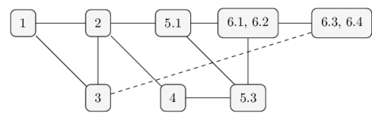Figure 1: Reading order dependencies
Figure 1 depicts a reading order suggestion, based on information dependencies. The dashed line between section 3 and sections 6.3, 6.4 suggests that understanding the latter is not directly dependent on the former, but since ForSyDe-Deep syntax is derived from ForSyDe-Shallow, it is recommended to get acquainted with the ForSyDe-Shallow syntax and its equivalence with the ForSyDe-Atom syntax.
1.1 Application Specification
An AESA, see picture below, may consist of thousands of antenna elements. The relative phases of the pulses of the antenna’s different antenna elements can be set to create a constructive interference in the chosen main lobe bearing. In this way the pointing direction can be set without any moving parts. When receiving, the direction can be steered by following the same principle, as seen the Digital Beam Former below. One of the main advantages of the array antennas is the capacity to extract not only temporal but also spatial information, i.e. the direction of incoming signals.
Figure 2 shows a simplified radar signal processing chain that is used to illustrate the calculations of interest. The input data from the antenna is processed in a number of steps.
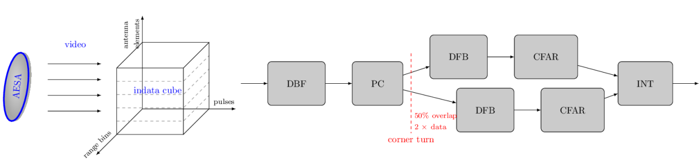Figure 2: Overview of the video processing chain
In this report we assume one stream per antenna element. The indata is organized into a sequence of “cubes”, each corresponding to a certain integration interval. Each sample in the cube represents a particular antenna element, pulse and range bin. The data of the cube arrives pulse by pulse and each pulse arrives range bin by range bin. This is for all elements in parallel. Between the Pulse Compression (PC) and Doppler Filter Bank (DFB) steps there is a corner turn of data, i.e. data from all pulses must be collected before the DFB can execute.
The different steps of the chain, the antenna and the input data format are briefly described in the following list. For a more detailed description of the processing chain, please refer to section 2.
Digital Beam Forming (DBF): The DBF step creates a number of simultaneous receiver beams, or “listening directions”, from the input data. This is done by doing weighted combinations of the data from the different antenna elements, so that constructive interference is created in the desired bearings of the beams. The element samples in the input data set are then transformed into beams.
Pulse Compression (PC): The goal of the pulse compression is to collect all received energy from one target into a single range bin. The received echo of the modulated pulse is passed through a matched filter. Here, the matched filtering is done digitally.
Doppler Filter Bank incl. envelope detection (DFB): The DFB gives an estimation of the target’s speed relative to the radar. It also gives an improved signal-to-noise ratio due to a coherent integration of indata. The pulse bins in the data set are transformed into Doppler channels. The envelope detector calculates the absolute values of the digital samples. The data is real after this step.
Constant False Alarm Ratio (CFAR): The CFAR processing is intended to keep the number of false targets at an acceptable level while maintaining the best possible sensitivity. It normalizes the video in order to maintain a constant false alarm rate when the video is compared to a detection threshold. With this normalization the sensitivity will be adapted to the clutter situation in the area (around a cell under test) of interest.
Integrator (INT) The integrator is an 8-tap unsigned integrator that integrates channel oriented video. Integration shall be done over a number of FFT batches of envelope detected video. Each Doppler channel, range bin and antenna element shall be integrated.
The following table briefly presents the dimensions of the primitive functions associated with each processing stage, where data sets are measured in number of elements processed organized in channels range bins pulses; data precision is measured in bit width; and approximative performance is given in MOPS. These dimensions represent the scaled-down version of a realistic AESA radar signal processing system, with 16 input antenna channels forming into 8 beams.
Table 1: Dimensions of the AESA case study covered in the report
Block
In Data Set
Out Data Set
Type In
Out
Precision In
Out
Approx. perform.
DBF
16
20
2688
PC
20
20
4608
DFB
20
20
7680
CFAR
20
16
360
INT
16
16
24576
AESA
–
–
39912
1.2 Using This Document
PREREQUISITES: the document assumes that the reader is familiar with the functional programming language Haskell, its syntax, and the usage of a Haskell interpreter (e.g. ghci). Otherwise, we recommend consulting at least the introductory chapters of one of the following books by Lipovača (2011) and Hutton (2016) or other recent books in Haskell. The reader also needs to be familiar with some basic ForSyDe modeling concepts, such as process constructor, process or signal. We recommend going through at least the online getting started tutorial on ForSyDe-Shallow or the one on ForSyDe-Atom, and if possible, consulting the (slightly outdated) book chapter on ForSyDe (Sander, Jantsch, and Attarzadeh-Niaki 2017).
This document has been created using literate programming. This means that all code shown in the listings is compilable and executable. There are two types of code listing found in this document. This style
shows source code as it is found in the implementation files, where the line numbers correspond to the position in the source file. This style
Prelude> 1 + 1
2
suggests interactive commands given by the user in a terminal or an interpreter session. The listing above shows a typical ghci session, where the string after the prompter symbol > suggests the user input (e.g. 1 + 1). Whenever relevant, the expected output is printed one row below (e.g. 2).
The way this document is meant to be parsed efficiently is to load the source files themselves in an interpreter and test the exported functions gradually, while reading the document at the same time. Due to multiple (sometimes conflicting) dependencies on external packages, for convenience the source files are shipped as multipleStack packages each creating an own sandbox on the user’s local machine with all dependencies and requirements taken care of. Please refer to the project’s README file for instructions on how to install and compile or run the Haskell files.
At the beginning of each chapter there is meta-data guiding the reader what tools and packages are used, like:
Package
aesa-atom-0.1.0
path: ./aesa-atom/README.md
This table tells that the package where the current chapter’s code resides is aesa-atom, version 0.1.0. This table might contain information on the main dependency packages which contain important functions, and which should be consulted while reading the code in the current chapter. If the main package generates an executable binary or a test suite, these are also pointed out. The third column provides additional information such as a pointer to documentation (relative path to the project root, or web URL), or usage suggestions.
It is recommended to read the main package’s README file which contains instructions on how to install, compile and test the software, before proceeding with following a chapter. Each section of a chapter is written within a library module, pointed out in the beginning of the respective section by the line:
The most convenient way to test out all functions used in module ForSyDe.X.Y is by loading its source file in the sandboxed interpreter, i.e. by running the following command from the project root:
stack ghci src/ForSyDe/X/Y.lhs
An equally convenient way is to create an own .hs file somewhere under the project root, which imports and uses module ForSyDe.X.Y, e.g.
This file can be loaded and/or compiled from within the sandbox, e.g. with stack ghci MyTest.hs.
2 High-Level Model of the AESA Signal Processing Chain in ForSyDe-Atom
This section guides the reader throughout translating “word-by-word” the provided specifications of the AESA signal processing chain into a concrete, functionally complete, high-level executable model in ForSyDe-Atom. This first attempt focuses mainly on the top-level functional behavior of the system, exerting the successive transformations upon the input video cubes, as suggested by Figure 2. We postpone the description/derivation of more appropriate time behaviors for later sections. Enough AESA system details are given in order to understand the model. At the end of this section we simulate this model against a realistic input set of complex antenna data, and test if it is sane (i.e. provides the expected results).
Package
aesa-atom-0.1.0
path: ./aesa-atom/README.md
Deps
forsyde-atom-0.2.2
url: https://forsyde.github.io/forsyde-atom/api/
forsyde-atom-extensions-0.1.1
path: ./forsyde-atom-extensions/README.md
Bin
aesa-cube
usage: aesa-cube --help
Historically, ForSyDe-Atom has been a spin-off of ForSyDe-Shallow which has explored new modeling concepts, and had a fundamentally different approach to how models are described and instantiated. ForSyDe-Atom introduced the concept of language layer, extending the idea of process constructor, and within this setting it explored the algebra of algorithmic skeletons, employed heavily within this report. As of today, both ForSyDe-Shallow and ForSyDe-Atom have similar APIs and are capable of modeling largely the same behaviors. The main syntax differences between the two are covered in section 3, where the same high-level model is written in ForSyDe-Shallow.
2.1 Crash course in ForSyDe-Atom
Before proceeding with the modeling of the AESA processing chain, let us consolidate the main ForSyDe concepts which will be used throughout this report: layer, process constructor and skeleton. If you are not familiar with ForSyDe nomenclature and general modeling principles, we recommend consulting the documentation pointed out in section 1 first.
As seen in section 1.Application Specification, most of the AESA application consists of typical DSP algorithms such as matrix multiplications, FFT, moving averages, etc. which lend themselves to streaming parallel implementations. Hence we need to unambiguously capture the two distinct aspects of the AESA chain components:
streaming behavior is expressed in ForSyDe through processes which operate on signals encoding a temporal partitioning of data. Processes are instantiated exclusively using process constructors which can be regarded as templates inferring the semantics of computation, synchronization and concurrency as dictated by a certain model of computation (MoC) (Sander and Jantsch (2004),Lee and Seshia (2016)).
parallelism is expressed through parallel patterns which operate on structured types (e.g. vectors) encoding a spatial partitioning of data. These patterns are instantiated as skeletons, which are templates inferring the semantics of distribution, parallel computation and interaction between elements, as defined by the algebra of catamorphisms (Fischer, Gorlatch, and Bischof 2003).
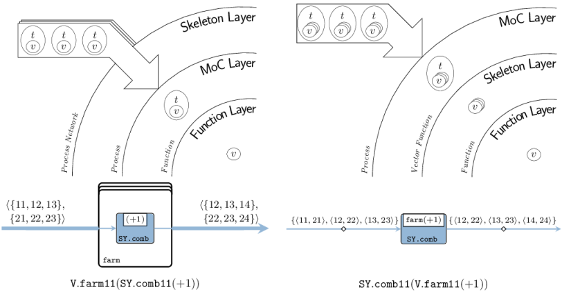Figure 3: Depiction of layer usage: (left) skeleton networks of processes; (right) processes of skeleton functions
In order to capture these two1 interacting aspects in unison as a complete system, we describe them in terms of two distinct, orthogonal layers within the ForSyDe-Atom framework. A language layer is a (very small) domain specific language (DSL) heavily rooted in the functional programming paradigm, which is able to describe one aspect of a cyber-physical system (CPS). Layers interact with one another by virtue of the abstraction principle inherent to a functional programming language (Backus 1978): each layer defines at least one higher order function that is able to take a function (i.e. abstraction) from another layer as an argument and to lift it within its own domain. To picture the interaction between layers, consider Figure 2 where, although we use the same farm vector skeleton and comb synchronous (SY) process constructor, the two different compositions describe two different (albeit semantically equivalent) systems: the first one is instantiating a farm network of SY processes operating on a vector of signals in parallel; whereas the second one is instantiating a single SY process operating on o signal where each event is carrying a vector of values.
2.2 A High-Level Model
This section presents a high-level behavioral model of the AESA signal processing chain presented in section 1.Application Specification. This model follows intuitive and didactic way to tackle the challenge of translating the textual specifications into an executable ForSyDe specification and is not, in any circumstance, the only way to model the application. As of section 2.1 we represent each stage in the AESA chain as a process acting upon (complete) cubes of data, i.e. as processes of skeleton functions. At this phase in the system design we do not care how the cubes are being formed or how the data is being carried around, bur rather on what transformations are applied on the data cubes during each subsequent stage of the AESA pipeline. The purpose of the model is to provide a executable reference for the AESA system functionality, that can later be derived to more efficient descriptions.
The only timed behavior exerted by the model in this section is the causal, i.e. ordered, passing of cubes from one stage to another. In order to enable a simple, abstract, and thus analyzable “pipeline” behavior this passing can be described according to the perfect synchrony hypothesis, which assumes the processing of each event (cube) takes an infinitely small amount of time and it is ready before the next synchronization point. This in turn implies that all events in a system are synchronized, enabling the description of fully deterministic behaviors over infinite streams of events. These precise execution semantics are captured by the synchronous reactive (SY) model of computation (MoC) (Lee and Seshia (2016),Benveniste et al. (2003)), hence we import the SY library from the MoC layer of ForSyDe-Atom, see (Ungureanu and Sander 2017), using an appropriate alias.
For describing parallel operations on data we use algorithmic skeletons (Fischer, Gorlatch, and Bischof (2003),Skillicorn (2005)), formulated on ForSyDe-Atom’s in-house Vector data type, which is a shallow, lazy-evaluated implementation of unbounded arrays, ideal for early design validation. Although dependent, bounded, and even boxed (i.e. memory-mapped) alternatives exist, such as FSVec or REPA Arrays, for the scope of this project the functional validation and (by-hand) requirement analysis on the properties of skeletons will suffice. We also import the Matrix and Cube utility libraries which contain type synonyms for nested Vectors along with their derived skeletons, as well a DSP which contain commonly used DSP blocks defined in terms of vector skeletons.
The system parameters are integer constants defining the size of the application. For a simple test scenario provided by Saab AB, we have bundled these parameters in the following module, and we shall use their variable names throughout the whole report:
For ease of documentation we will be using type synonyms (aliases) for all types and structures throughout this design:
Antenna denotes a vector container for the antenna elements. Its length is equal to the number of antennas in the radar .
After Digital Beamforming (DBF), the antenna elements are transformed into beams, thus we associate the Beam alias for the vector container wrapping those beams.
Range is a vector container for range bins. All antennas have the same number of range bins , rendering each a perfect matrix of samples for every pulse.
In this section we follow each stage described in section 1.Application Specification, and model them as a processes operating on cubes (three-dimensional vectors) of antenna samples.
2.2.2.1 Digital Beamforming (DFB)
The DBF receives complex in data, from antenna elements and forms simultaneous receiver beams, or “listening directions”, by summing individually phase-shifted in data signals from all elements. Considering the indata video cube, the transformation applied by DBF, could be depicted as in Figure 4.
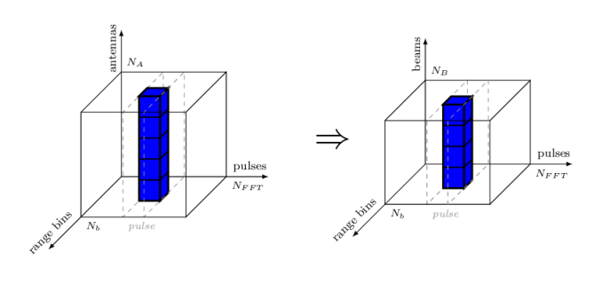Figure 4: DBF on video structure
Considering the application specification in section 1.Application Specification on the input data, namely “for each antenna the data arrives pulse by pulse, and each pulse arrives range bin by range bin”, we can assume that the video is received as Antenna (Window (Range a)) cubes, meaning that the inner vectors are the range bins. However, Figure 4 shows that the beamforming function is applied in the antenna direction, so we need to transpose the cube in such a way that Antenna becomes the inner vector, i.e. Window (Range (Antenna a)). We thus describe the DBF stage as a combinational SY process comb acting upon signals of Cubes, namely mapping the beamforming function on each column of each pulse matrix (see Figure 4).
The beamforming function is specified like in eq. 1, where denotes the samples from antenna elements, and respectively are samples for each beam. This is in fact a of matrix-vector multiplication, thus we implement eq. 1 at the highest level of abstraction simply as matrix/vector operations like in eq. 2.
In fact the operation performed by the function in eq. 1, respectively in eq. 2 is nothing else but a dot operation between a vector and a matrix. Luckily, ForSyDe.Atom.Skeleton.Vector.DSP exports a utility skeleton called dotvm which instantiates exactly this type of operation. Thus we can instantiate an equivalent simply as
The expanded version fDBF was given mainly for didactic purpose, to get a feeling for how to manipulate different skeletons to obtain more complex operations or systems. From now on, in this section we will only use the library-provided operations, and we will study them in-depth only later in section 5.
2.2.2.2 Pulse Compression (PC)
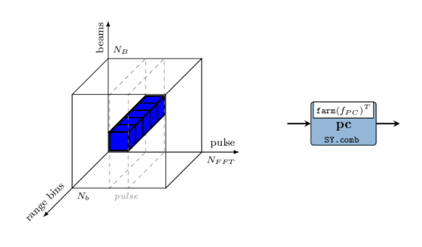Figure 6: PC: direction of application on video structure (left); process (right)
In this stage the received echo of the modulated pulse, i.e. the information contained by the range bins, is passed through a matched filter for decoding their modulation. This essentially applies a sliding window, or a moving average on the range bin samples. Considering the video cube, the PC transformation is applied in the direction shown in Figure 6, i.e. on vectors formed from the range of every pulse.
The PC process is mapping the on each row of the pulse matrices in a cube, however the previous stage has arranged the cube to be aligned beam-wise. This is why we need to re-arrange the data so that the innermost vectors are Ranges instead, and we do this by simply transpose-ing the inner RangeBeam matrices into BeamRange ones.
Here the function applies the fir skeleton on these vectors (which computes a moving average if considering vectors). The fir skeleton is a utility formulated in terms of primitive skeletons (i.e. farm and reduce) on numbers, i.e. lifting arithmetic functions. We will study this skeleton later in this report and for now we take it “for granted”, as conveniently provided by the DSP utility library. For this application we also use a relatively small average window (5 taps).
2.2.2.3 Corner Turn (CT) with 50% overlapping data
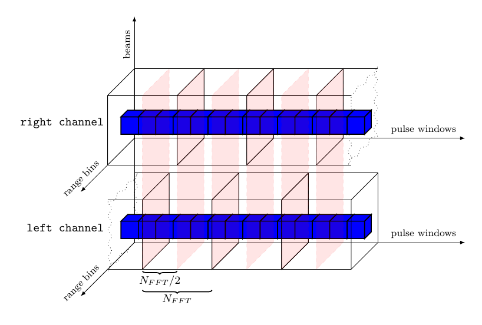Figure 7: Concurrent processing on 50% overlapped data
During the CT a rearrangement of data must be performed between functions that process data in “different” directions, e.g. range and pulse, in order to be able to calculate the Doppler channels further in the processing pipeline. The process of corner turning becomes highly relevant when detailed time behavior of the application is being derived or inferred, since it demands well-planned design decisions to make full use of the underlying architecture. At the level of abstraction on which we work right now though, it is merely a matrix transpose operation, and it can very well be postponed until the beginning of the next stage. However, a much more interesting operation is depicted in Figure 7: in order to maximize the efficiency of the AESA processing the datapath is split into two concurrent processing channels with 50% overlapped data.
Implementing such a behavior requires a bit of “ForSyDe thinking”. At a first glance, the problem seems easily solved considering only the cube structures: just “ignore” half of the first cube of the right channel, while the left channel replicates the input. However, there are some timing issues with this setup: from the left channel’s perspective, the right channel is in fact “peaking into the future”, which is an abnormal behavior. Without going too much into details, you need to understand that any type of signal “cleaning”, like dropping or filtering out events, can cause serious causality issues in a generic process network, and thus it is illegal in ForSyDe system modeling. On the other hand we could delay the left channel in a deterministic manner by assuming a well-defined initial state (e.g. all zeroes) while it waits for the right channel to consume and process its first half of data. This defines the history of a system where all components start from time zero and eliminates any source of “clairvoyant”/ambiguous behavior.
To keep things simple, we stay within the same time domain, keeping the perfect synchrony assumption, and instantiating the left channel building mechanism as a simple Mealy finite state machine. This machine splits an input cube into two halves, stores one half and merges the other half with the previously stored state to create the left channel stream of cubes.
OBS! Perhaps considering all zeroes for the initial state might not be the best design decision, since that is in fact “junk data” which is propagated throughout the system and which alters the expected behavior. A much safer (and semantically correct) approach would be to model the initial state using absent events instead of arbitrary data. However this demands the introduction of a new layer and some quite advanced modeling concepts which are out of the scope of this report2. For the sake of simplicity we now consider that the initial state is half a cube of zeroes and that there are no absent events in the system. As earlier mentioned, it is illegal to assume any type of signal cleaning during system modeling, however this law does not apply to the observer (i.e. the testbench), who is free to take into consideration whichever parts of the signals it deems necessary. We will abuse this knowledge in order to show a realistic output behavior of the AESA signal processing system: as “observers”, we will ignore the effects of the initial state propagation from the output signal and instead plot only the useful data.
2.2.2.4 Doppler Filter Bank (DFB)
During the Doppler filter bank, every window of samples, associated with each range bin is transformed into a Doppler channel and the complex samples are converted to real numbers by calculating their envelope.
The dfb process applies the the following chain of functions on each window of complex samples, in three consecutive steps:
scale the window samples with a set of coefficients to decrease the Doppler side lobes from each FFT output and thereby to increase the clutter rejection.
apply an -point 2-radix decimation in frequency Fast Fourier Transform (FFT) algorithm.
compute the envelope of each complex sample when phase information is no longer of interest. The envelope is obtained by calculating the absolute value of the complex number, converting it into a real number.
The CFAR normalizes the data within the video cubes in order to maintain a constant false alarm rate with respect to a detection threshold. This is done in order to keep the number of false targets at an acceptable level by adapting the normalization to the clutter situation in the area (around a cell under test) of interest. The described process can be depicted as in Figure 11 which suggests the stencil data accessing pattern within the video cubes.
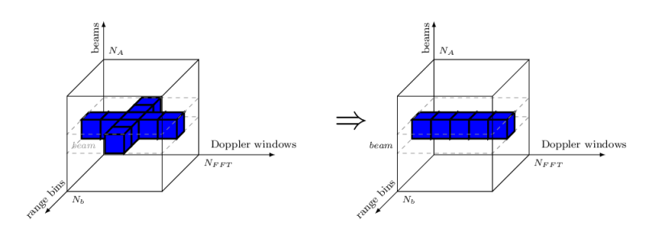Figure 11: Constant False Alarm Ratio on cubes of complex samples
The cfar process applies the function on every matrix corresponding to each beam. The function normalizes each Doppler window, after which the sensitivity will be adapted to the clutter situation in current area, as seen in Figure 13. The blue line indicates the mean value of maximum of the left and right reference bins, which means that for each Doppler sample, a swipe of neighbouring bins is necessary, as suggested by Figure 11. This is a typical pattern in signal processing called stencil, which will constitute the main parallel skeleton within the function.
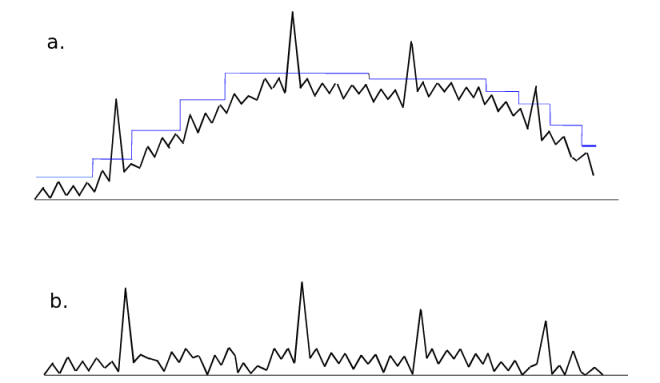Figure 13: The signal level within one pulse window: a) before CFAR; b) after CFAR
The function itself can be described with the system of eq. 3, where
is the minimum value over all Doppler channels in a batch for a specific data channel and range bin.
and calculate the early and respectively late mean values from the neighboring range bins as a combination of geometric and arithmetic mean values.
and are the earliest bin, respectively latest bin for which the CFAR can be calculated as and require at least bins + 1 guard bin before and respectively after the current bin. This phenomenon is also called the “stencil halo”, which means that CFAR, as defined in eq. 3 is applied only on bins.
bins earlier than , respectively later than , are ignored by the CFAR formula and therefore their respective EMV and LMV are replaced with the lowest representable value.
5 is added to the exponent of the CFAR equation to set the gain to 32 (i.e. with only noise in the incoming video the output values will be 32).
The first thing we calculate is the for each Doppler window (row). For each row of rbins (i.e. range bins of Doppler windows) we look for the minimum value (reduce min) and apply the binary logarithm on it.
Another action performed over the matrix rbins is to form two stencil “cubes” for EMV and LMV respectively, by gathering batches of Doppler windows like in eq. 4, computing them like in eq. 5.
Each one of these neighbors matrices will constitute the input data for calculating the and for each Doppler window. and are calculated by applying the mean function arithMean over them, as shown (only for the window associated with the bin) in eq. 5. The resulting emv and lmv matrices are padded with rows of the minimum representable value -maxFloat, so that they align properly with rbins in order to combine into the 2D farm/stencil defined at eq. 3. Finally, fCFAR yields a matrix of normalized Doppler windows. The resulting matrices are not transformed back into sample streams by the parent process, but rather they are passed as single tokens downstream to the INT stage, where they will be processed as such.
2.2.2.6 Integrator (INT)
During the last stage of the video processing chain each data sample of the video cube is integrated against its 8 previous values using an 8-tap FIR filter, as suggested by the drawing in Figure 14.
Before integrating though, the data from both the left and the right channel need to be merged and interleaved. This is done by the process interleave below, which is a convenient utility exported by the SY library, hiding a domain interface. When considering only the data structures, the interleave process can be regarded as an up-sampler with the rate 2/1. When taking into consideration the size of the entire data set (i.e. token rates structure sizes data size), we can easily see that the overall required system bandwidth (ratio) remains the same between the PC and INT stages, i.e. .
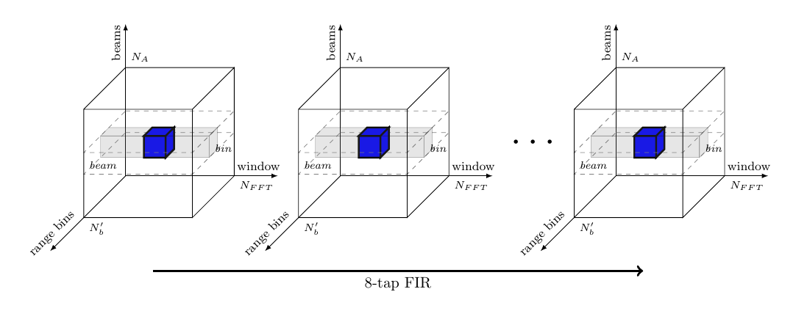Figure 14: Integration on cubes of complex samples
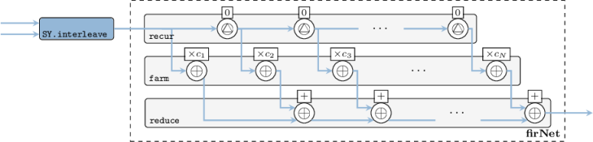Figure 15: INT network
The 8-tap FIR filter used for integration is also a moving average, but as compared to the fir function used in section 2.2.2.2, the window slides in time domain, i.e. over streaming samples rather than over vector elements. To instantiate a FIR system we use the fir' skeleton provided by the ForSyDe-Atom DSP utility libraries, which constructs the the well-recognizable FIR pattern in Figure 15, i.e. a recur-farm-reduce composition. In order to do so, fir' needs to know what to fill this template with, thus we need to provide as arguments its “basic” operations, which in our case are processes operating on signals of matrices. In fact, fir itself is a specialization of the fir' skeleton, which defines its basic operations as corresponding functions on vectors. This feature derives from a powerful algebra of skeletons which grants them both modularity, and the possibility to transform them into semantically-equivalent forms, as we shall soon explore in section 6.
The AESA process network is formed by “plugging in” together all components instantiated in the previous sections, and thus obtaining the system description in Figure 16. We do not transpose the output data, because the Doppler windows are the ones we are interested in plotting as the innermost structures.
Here we define the size constants, for a simple test scenario provided by Saab AB. The size nA can be inferred from the size of input data and the vector operations.
Here we define the vectors of coefficients used throughout the AESA design. We keep this module as independent as possible from the main design and export the coefficients both as ForSyDe-Atom vectors but also as Haskell native lists, so that other packages can make use of them, without importing the whole ForSyDe-Atom chain.
The mkBeamConst generator creates a matrix of beam constants used in the digital beamforming stage section 5.1.2.1. These beam constants perform both phase shift and tapering according to eq. 6, where performs tapering and perform phase shifting. For tapering we use a set of Taylor coefficients generated with our in-house utility taylor. The phase shift shall be calculated according to eq. 7, where is the distance between the antenna elements. is the angle between the wave front of the current beam and normal of the antenna elements and is the wavelength of the pulse.
The mkPcCoefs generator for the FIR filter in section 5.1.2.2 is simply a -tap Hanning window. It can be changed according to the user requirements. All coefficients are scaled with so that the output does not overflow a possible fixed point representation.
We use also a Hanning window to generate the complex weight coefficients for decreasing the Doppler side lobes during DFB in section 2.2.2.4. This can be changed according to the user requirements.
As a first trial to validate that our AESA high-level model is “sane”, i.e. is modeling the expected behavior, we test it against realistic input data from an array of antennas detecting some known objects. For this we have provided a set of data generator and plotter scripts, along with an executable binary created with the CubesAtom module presented in section 2.2. Please read the project’s README file on how to compile and run the necessary software tools.
The input data generator script replicates a situation in which 13 distinct objects, either near each other or far apart, as seen in tbl. 2, are detected drowned into -18dB worth of noise by the 16 AESA antenna elements (see section 2.2.AESA parameters). In in Figure 17 (a) can be seen a plot with the absolute values of the complex samples in the first video indata cube, comprising of 16 antenna (pulse range) matrices.
In Figure 17 (b) a cube consisting of 8 beam (Doppler range) matrices from the AESA signal processing output is shown. We can see the 13 objects detected with different intensities across the 8 beams. As they are all positioned at approximately the same angle relative to the antenna (i.e. ) we can see the maximum correlation values are reflected in beam 2.
Table 2: Objects reflected in the generated AESA indata
#
Distance (m)
Angle ()
Rel. Speed (m/s)
Rel. Power
1
12e3
0.94
-6
2
13e3
5 0.94
-6
3
14e3
10 0.94
-6
4
15e3
-0.94
-2
5
16e3
-2 0.94
-2
6
17e3
-3 0.94
-2
7
18e3
-20 0.94
-4
8
19e3
-23 0.94
-4
9
20e3
-26 0.94
-4
10
21e3
-29 0.94
-4
11
25e3
-15 0.94
-2
12
25.4e3
-15 0.94
-4
13
25.2e3
-15 0.94
-3
a
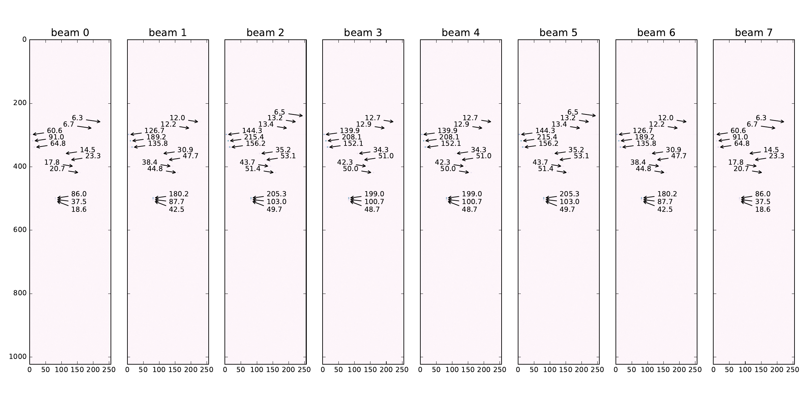b
Figure 17: AESA data plots. a — Absolute values for one input video cube with antenna data, b — One output cube with radar data
2.4 Conclusion
In this section we have shown how to write a fully-functional high-level model of an AESA radar signal processing chain in ForSyDe-Atom. In the process we have exemplified basic modeling concepts such as layers, process constructors and skeletons. For simplicity we have employed only two widely-used layers, representing time (through the MoC layer) and parallelism (through the Skeleton layer) aspects in a system. Within the MoC layer we used only the SY MoC capturing the passage of data (structures) in a synchronous pipeline fashion. Within the Skeleton layer we used algorithmic skeletons on vector data types to capture the inherent parallel interaction between elements, mainly to build algorithms on cubes. As of Figure 3 from section 2.1, this layer setup is represented by right picture (processes of skeleton functions). However in section 2.2.2.6 we have given “an appetizer” on how to instantiate regular, parameterizable process network structures using the same skeletons, thanks to the concept of layers.
In section 5 we transform this model to capture some more refined notions of time and data passage, as well as more complex use of skeletons and patterns, gradually reaching enough system details to start considering the synthesis of the model in section 6 to a hardware platform. Until then we will introduce an alternative modeling framework, as well as practical tools to verify the conformance of the ForSyDe model and all its subsequent refinements to the given specification.
3 Alternative Modeling Framework: ForSyDe-Shallow
This section follows step-by-step the same approach as section 2, but this time using the ForSyDe-Shallow modeling framework. The purpose is to familiarize the reader to the syntax of ForSyDe-Shallow should the designer prefer it instead of ForSyDe-Atom. This section is also meant to show that, except for minor syntactic differences, the same modeling concepts are holding and the user experience and API design are very similar.
ForSyDe-Shallow is the flagship and the oldest modeling language of the ForSyDe methodology (Sander and Jantsch 2004). It is a domain specific language (DSL) shallow-embedded into the functional programming language Haskell and uses the host’s type system, lazy evaluation mechanisms and the concept of higher-order functions to describe the formal modeling framework defined by ForSyDe. At the moment of writing this report, ForSyDe-Shallow is the more “mature” counterpart of ForSyDe-Atom. Although some practical modeling concepts such as layers, patterns and skeletons have been originally developed within ForSyDe-Atom, they are now well-supported by ForSyDe-Shallow as well. In the future the modeling frameworks such as ForSyDe-Atom and ForSyDe-Shallow are planned to be merged into a single one incorporating the main language features of each one and having a similar user experience as ForSyDe-Shallow.
3.1 The High-Level Model
The behavioral model of this section is exactly the same as the one presented in in section 2.2, and thus we will not go through all the details of each functional block, but rather list the code and point out the syntax differences.
The code for this section is written in the following module, see section 1.2 on how to use it:
The first main difference between ForSyDe-Shallow and ForSyDe-Atom becomes apparent when importing the libraries: ForSyDe-Shallow does not require to import as many sub-modules as its younger counterpart. This is because the main library ForSyDe.Shallow exports all the main language constructs, except for specialized utility blocks, so the user does not need to know where each function is placed.
For the AESA model we make use of such utilities, such as -dimensional vectors (i.e. matrices, cubes) and DSP blocks, thus we import our local extended ForSyDe.Shallow.Utilities library.
To keep the model consistent with the design in section 2.2 we import the same parameters and coefficient generator functions from the aesa-atom package, as presented in sections 2.2.AESA parameters, 2.2.Coefficients.
This section follows the same model as section 2.2.2 using the ForSyDe-Shallow modeling libraries. The digital beamforming (DBF) block presented in section 2.2.2.1 becomes:
The second main difference between the syntax of ForSyDe-Shallow and ForSyDe-Atom can be noticed when using the library functions, such as process constructors: function names are not invoked with their module name (alias), but rather with a suffix denoting the type they operate on, e.g. transposeCube is the equivalent of C.transpose. Another difference is that constructors with different numbers of inputs and outputs are not differentiated by a two-number suffix, but rather by canonical name, e.g. combSY is the equivalent of SY.comb11. Lastly, you might notice that some function names are completely different. That is because ForSyDe-Shallow uses names inspired from functional programming, mainly associated with operations on lists, whereas ForSyDe-Atom tries to adopt more suggestive names with respect to the layer of each design component and its associated jargon, e.g. mapMat is the equivalent of M.farm11, or zipWithV is equivalent with V.farm21.
We go further with the description of the pulse compression (PC) block, as described previously in section 2.2.2.1 becomes. The same variation in naming convention can be noticed, but the syntax is still the same.
The same goes for overlap state machine use in the corner turn (CT) stage, as well as the Doppler filter bank (DFB) and the constant false alarm ratio (CFAR) stages from sections 2.2.2.3-2.2.2.5 respectively.
The fft function from ForSyDe-Shallow is provided as a monomorphic utility function, and not necessarily as a skeleton. This is why, although slightly more efficient, it is not as flexible as the skeleton counterpart, and thus we need to wrap it inside our custom data type converter onComplexFloat to be able to “plug it” into our system, i.e. there are no data type mismatches.
For the integration stage (INT) presented in section 2.2.2.3 we extended the ForSyDe.Shallow.Utility library with a fir' skeleton and an interleaveSY process, similar to the ones developed for ForSyDe-Atom3. Thus we can implement this stage exactly as before:
Similarly to the ForSyDe-Atom implementation, we have provided a runner to compile the model defined in section 2.2 within the AESA.CubesShallow module into an executable binary, in order to tests that it is sane. The same generator an plotter scripts can be used with this binary, so please read the project’s README file on how to compile and run the necessary software tools.
We use the same generated input data reflecting the 13 objects from tbl. 2, plotted in Figure 17 (a). This time the AESA radar processing output shows the picture in Figure 18.
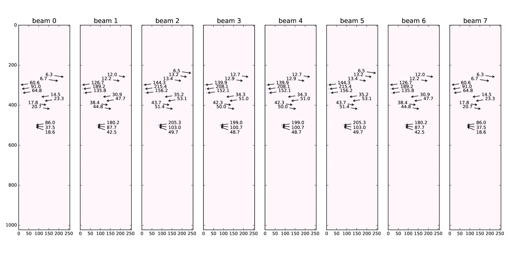Figure 18: One output cube with radar data
Comparing Figure 18 with Figure 17 (b) one can see that the same objects have been identified, albeit with slightly different correlation values. This is because we use single-precision floating point Float as the base number representation in our model, which are well-known to be very sensitive to slight variations in arithmetic operations, as far as the order of evaluation is concerned. The output data graphs reflect the fact that ForSyDe-Shallow and ForSyDe-Atom have different implementation, but that is the only conclusion that can be drawn from this.
3.3 Conclusion
In this section we have presented an alternative implementation of the AESA signal processing high-level model in the ForSyDe-Shallow modeling framework. We have deliberately implemented the same model in order to highlight the API differences between ForSyDe-Atom and ForSyDe-Shallow.
The next sections will only use ForSyDe-Atom as the main modeling framework, however users should hopefully have no trouble switching between their modeling library of choice. The insights in the API of ForSyDe-Shallow will also be useful in section 6 when we introduce ForSyDe-Deep, since the latter has similar constructs.
4 Validating a ForSyDe Model Against the Specification
This section presents a practical and convenient method for verifying the conformance of a ForSyDe model against a set of specification properties. In order to do so we make use of the QuickCheck framework, which offers an EDSL for specifying system model properties and a random test-case generation engine for validating a design under test (DUT) against these properties. Although the verification is not exhaustive, it is “smart” enough to quickly identify and correct discrepancies between specification and model implementation, making QuickCheck an ideal tool in a system designer’s toolbox.
QuickCheck(Claessen and Hughes 2011) is a DSL embedded in Haskell for specifying denotational properties of functions, and a test case generator engine based on type algebras to obtain a good coverage of a DUT. As it is based on type algebras, it uses the insights from the DUT’s type constructors to build automatic or user-guided strategies for identifying edge or violating cases within a relatively small number of test cases. Due to its random nature it is capable of finding failing sequences of inputs, which are then to define minimum violating cases, making it very useful in development iterations.
A very good article motivating QuickCheck’s usefulness in system design is found on Joe Nelson’s blog, from which we extract the following paragraph: “Proponents of formal methods sometimes stress the notion of specification above that of implementation. However it is the inconsistencies between these two independent descriptions of the desired behavior that reveal the truth. We discover incomplete understanding in the specs and bugs in the implementation. Programming does not flow in a single direction from specifications to implementation but evolves by cross-checking and updating the two. Property-based testing quickens this evolution. Of course the only way to truly guarantee properties of programs is by mathematical proof. However property-based tests approximate deductive confidence with less work by checking properties for a finite number of randomized inputs called test cases.”
DISCLAIMER: this section assumes that the reader is familiar with QuickCheck’s syntax and has gone through a few hands-on tutorials. For more information we recommend checking out either the article of Hughes (2007), John Nelson’s blog article on QuickCheck, or the (slightly outdated) official QuickCheck tutorial.
4.1 Formal Notation
Properties in the QuickCheck DSL are formulated as , where pre-conditions are defining generators for legal inputs under which the statement is evaluated.
In order to ease the understanding of the QuickCheck code, for each property we will also provide a short-hand mathematical notation using the format, using the following conventions:
Notation
Meaning
Vector a
length v
a signal with events with the type of s
vector [a,b,c,...]
signal [a,b,c,...]
or
the (ordered) sequence with the elements from a signal s or a vector v
4.2 Properties
In this subsection we formulate a handful of properties whose purpose is:
to test that the model implementation from section 2.2 does not violate in any circumstance these “contracts”; and
ensure that any future (iterative) model refinement does not alter or violate these “contracts”.
Below you find the code written in a runnable module found at aesa-atom/test, which constitute the :tests-cube suite:
A couple of modules need to be imported before we can proceed. The QuickCheck and Framework modules a provide the test DSL as well as a couple of handy utilities for writing and handling test suites.
Finally, we import some in-house data generators which will be used in formulating the pre-conditions below, as well as some Haskell data type libraries. The generators are further documented in section 4.2.4.
The first property we want to check is that the main function in DBF (see section 2.2.2.1), will always yield beam samples, no matter what or how many inputs it has. Using the notation from section 4.1 we can formalize this property as follows:
Using our custom generator nonNullVector (see section 4.2.4) which satisfies . we translate eq. 8 to QuickCheck code:
This property ensures that the Beam dimension is respected, but what about the Range and Pulse dimensions of the indata video cube? These dimensions must not be altered. This is easy to prove, since the vector on those dimensions undergo a set of nested farm transformations, which ensure by definition that they do not alter the structure of the input data. However, let us be skeptical and assume that the library might be faulty, since farm is such an essential skeleton in the AESA system. A property which verifies that farm does not alter the structure of its input type, and thus any -dimensional vector (e.g. Matrix, Cube) undergoing a farm11 keeps its original dimensions, can be formulated as:
Notice that if there are no special pre-conditions for the input data, e.g. , we don’t need to invoke our own generator with the forAll keyword, but rather just specify the input type and QuickCheck will automatically call the default arbitrary generator for that particular type. Also, we enable QuickCheck to generate arbitrary unary functions along with arbitrary data, by using its Fun a b = Fun {apply :: a -> b} function wrapper.
Another property we want to make sure is not violated during any stage in the refinement flow is that the DBF block does not produce overflown numbers, i.e. the beam coefficients are well-scaled. At this abstraction level, we do not really consider the number representation, and for what it’s worth we can assume that our type CpxData is in fact where . However, we know from the specifications that the input values and that we eventually need to find efficient implementation for these number representations. The engineering intuition/experience tells that a more efficient representation would deal only with decimal numbers and would not need to be concerned with the integer part (e.g. Qn fixed point representation). Thus, at the functional level we need to ensure that the outputs themselves remain within the value pool as well, in order to avoid overflow in an arbitrary number representation.
For the function , the property ensuring legal value bounds would be formulated as:
Recall that in section 2.2.2.1 we have said that is the equivalent of a simple vector-matrix dot operation, and provided a simplified definition using the library-provided dotvm function. But are and really equivalent? We test this out by formulating a property:
Next we target the PC component (see section 2.2.2.2). The problem of dimension preserving has been solved by the previous prop_generic_farm_structure however, keeping our skeptical attitude, we want to check that the library-provided fir function performing a moving average, does not alter the dimensions of the input data
Furthermore we need to check that the FIR coefficients are scaled correctly and the outputs are within the legal range to avoid future possible overflows.
Checking the overlap process in section 2.2.2.2 is a quite tricky to check due to the structure of the data: we would need to access and compare data wrapped in nested vectors with large dimensions, meaning that it will be a very slow process. The 50% overlap will be able to be tested more easily using a random test generator further in section 5. For now we test that the cube dimensions are preserved by the overlap function:
From DFB onward we deal with Doppler values which have a higher range, so we are no longer concerned with testing for overflowing output data, until we take a decision in the refinement process to fix a particular number representation. However, we would still like to test that the format and dimensions of the intermediate cubes is the same, thus we formulate:
The DFB contains a FFT function which is hard-coded to work for samples thus we need to fix the input size accordingly. For the CFAR output, we use the Matrixsize utility.
We have tested that the fir implementation gives the correct impulse response, but what about our fir' network instantiation firNet defined in section 2.2.2.6? Does it act like a proper FIR filter? We test it by giving it an “impulse cube” signal, and test that the response is the expected one:
where is the response signal whose events are events are cubes containing the coefficients in . The generator impulseSigOfCubes is, again, defined in section 4.2.4.
Finally we gather all the properties defined in this section in a bundle of tests called “Cube HL Model Tests”, using the utilities provided by the Test.Framework library. withMaxSuccess determines how many random tests will be generated per property during one run.
The data generators used to formulate pre-conditions in this section, as well as a couple of utility functions are defined in this in-house module found at aesa-atom/tests. The documentation for each function is provided as in-line comments.
The file shown in section 4.2 can be compiled using any means available. We have included it as a test suite for the aesa-atom package. Please refer to the package’s README file for instructions on how to compile an run the tools.
As expected (in a public report) the test suite output looks like below:
aesa-atom-0.1.0.0: test (suite: tests-cube)
Cube HL Model Tests :
GENERIC farm does not alter the input structure : [OK, passed 100 tests]
DBF right number of outputs : [OK, passed 100 tests]
DBF legal value range : [OK, passed 200 tests]
DBF equivalence with simple dot product operation : [OK, passed 200 tests]
PC right number of outputs : [OK, passed 100 tests]
PC right unit impulse response : [OK, passed 100 tests]
PC legal value range : [OK, passed 200 tests]
CT both channels have cubes of the same dimensions : [OK, passed 100 tests]
DFB right number of outputs : [OK, passed 100 tests]
CFAR right number of outputs : [OK, passed 100 tests]
INT right unit impulse response : [OK, passed 70 tests]
Properties Total
Passed 11 11
Failed 0 0
Total 11 11
aesa-atom-0.1.0.0: Test suite tests-cube passed
However it should not be taken for granted that during the development process the printed output is this flawless. As mentioned in this section’s introduction, like any other software project, a ForSyDe model grows organically with consecutive iterations between system specification and model implementation, often held accountable by different parties or groups. Along with traditional unit tests (not covered by this report), property checking is a powerful tool which shortens these iteration cycles by setting a formal “legal frame” within which each (sub-)component in a a model needs to operate. Apart from helping in understanding the specification better, these properties ensure that further in the refinement process we do not mistakenly introduce new flaws. This will be demonstrated in the next sections.
5 Refining the Model Behavior. A Streaming Interpretation of AESA
In this section we refine the behavior of the high-level AESA model presented in section 2 focusing on a more fine-grained timed (i.e. streaming) aspects of the computation. We do this in an attempt to expose the inherent parallelism of the AESA application, by describing it as parallel networks of concurrent, independent processes operating on streaming elements rather than monolithic blocks operating on cubes. This perspective should pave the way for a more efficient exploration of the available design space in future refinement decisions. We present an alternative streaming-oriented model of the AESA system, validate it against test data and verify the properties previously formulated.
The high-level behavioral model of the AESA signal processing chain presented in this section is semantically equivalent to the one presented in section 2, however it exposes a more fine-grained temporal behavior of the individual operations performed on the complex indata samples. While most design choices are driven by a didactic purpose to consolidate the new modeling concepts presented in section 2.1, they can also be justified by the need to capture the essential properties in a formal way, in order to be exploitable in future stages of a design flow towards efficient implementations. The main design approach is to exploit the relative independence between each data path associated with each antenna element or beam, and to model these paths as skeletons (e.g. farms) of (chains of) processes. Each design decision will infer a re-partitioning of the indata cubes between the time (i.e. causality) and space dimensions following the design patters depicted earlier in Figure 3, namely:
skeletons of processes which: 1) express parallelism at the process level; 2) depicts processes as operating on elementary streams of data, e.g. originating from each antenna element in particular, and skeletons as the structured interactions between these streams; 3) expose a fine-grained modular view allowing to quantify the potential for load distribution, since each “operation” (i.e. process) clearly captures the aspect of precedence constraints.
process of skeletons which : 1) express parallelism at the datum level; 2) depicts processes as operating on structures of data (e.g. vectors, matrices or cubes); 3) expose a monolithic view of processes where precedence constraints are expressed “outside” of the algorithm, and where the algorithm itself expresses potential for data parallelism.
5.1 The High-Level Model
The code for this section is written in the following module, see section 1.2 on how to use it:
We import exactly the same libraries as in section 2.2, so we don’t need to explain what each one does. However, in this model we introduce a new MoC. For describing streaming behavior of the application our design will use a heterogeneous approach, using a combination of synchronous reactive (SY) processes (Lee and Seshia 2016; Benveniste et al. 2003), where the main assumption is that all events in the system are synchronized; and synchronous data flow (SDF) processes (Lee and Seshia 2016; Lee and Parks 1995), where the temporal behavior is formulated in terms of partial order constraints between events. We also use the Boolean dataflow model, which is an extension to SDF to allow for dynamic behaviors (Buck and Lee 1993). We import the SY, SDF and BDF libraries described in the MoC layer, see (Ungureanu and Sander 2017), using an appropriate alias for each.
In this section we follow each stage earlier described in described in section 2.2, and exploit the initial assumption on the order of events stating: “For each antenna the data arrives pulse by pulse, and each pulse arrives range bin by range bin. This happens for all antennas in parallel, and all complex samples are synchronized with the same sampling rate, e.g. of the A/D converter.”
This allows us to “unroll” the indata video cubes into parallel synchronous streams, each stream being able to be processed as soon as it contains enough data. This unrolling is depicted in Figure 19 as streaming the pulses as soon as they arrive: range bin by range bin. We say that we partition the data in time rather than in space, which is a more appropriate partition judging by the assumption above.
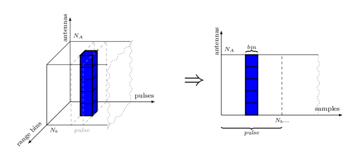Figure 19: Video cube unrolling
5.1.2.1 Digital Beamforming (DBF)
The role of the DBF stage is explained in section 2.2.2.1. Depicted from a streaming point of view, DBF would like in Figure 20.
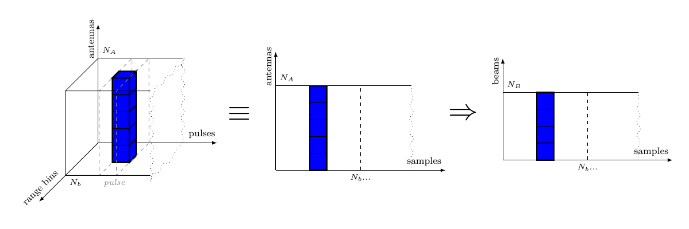Figure 20: Digital Beam Forming on streams of complex samples
As can be seen in Figure 20, a beam can be formed as soon as all antennas have produced a complex sample. The parallel streams of data coming from each antenna element are represented as a vector of synchronous (SY) signals, i.e. vector of signals where each event is synchronous with each other. This allows us to depict the dataflow interaction between the streams during digital beamforming as the process network in Figure 21, where an represents a combinational process comb.
The previous code listing, depicted in Figure 21, is actually showing the exact same “internals” as the vector-matrix dot product presented in section 2.2.2.1. However, the elementary operations, instead of regular arithmetic operations and , are processes applying these operations on SY streams. As such, the fanout skeleton distributes one signal to a whole row (i.e. vector) of processes, the matrix farm applies pair-wise a matrix of partially applied processes on this matrix of signals, and reduce creates a reduction network of binary processes pair-wise applying the function on all events in signals. Practically the DBF network transforms synchronous signals originating from each antenna element into synchronous signals for each beam. The internal structure of this transformation exposes multiple degrees of potential distribution on parallel synchronous resources.
5.1.2.2 Pulse Compression (PC)
The role of the DBF stage is explained in section 2.2.2.2. The sliding window, or moving average (MAV), is now applied on the range bin samples in the order of their arrival.
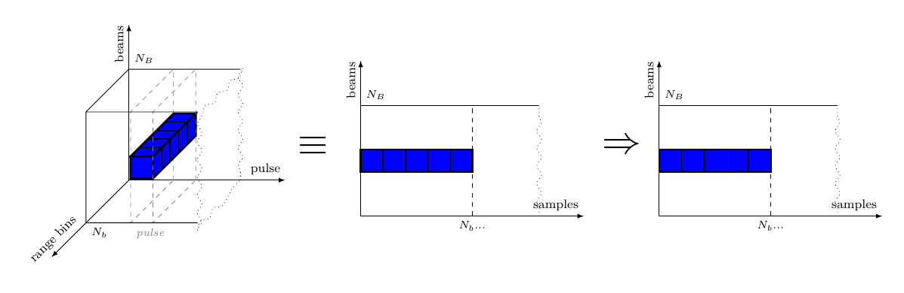Figure 22: Pulse Compression on streams of complex samples
In Figure 22 we can see that, in order to apply the MAV algorithm on all the range bins of every pulse, we need to accumulate samples and process them in batches. Intuitively this can be done by processing each beam with a synchronous dataflow (SDF) actor which, with each firing, consumes samples and produces samples. Note that at this stage of modeling we value intuition and the capturing of the right application properties rather than target implementation efficiency. We will tackle this problem later in the design stages (see section 6) where we will try to transform the model toward more efficient implementation models (with respect to some constraint, e.g. throughput) which preserve these behavioral properties.
Following the reasoning above, we instantiate the PC video processing stage as a farm of SDF processes procPC as depicted in Figure 23. Notice that before being able to apply the SDF actors we need to translate the SY signals yielded by the DBF stage into SDF signals. This is done by the toSDF interface which is an injective mapping from the (timed) domain of a SY MoC tag system, to the (untimed) co-domain of a SDF MoC tag system. For more on tag systems please consult (Lee and Sangiovanni-Vincentelli 1998).
The procPC actor consumes and produces nb tokens each firing, forms a Vector from these tokens, and applies the same fir function used in section 2.2.2.2 on these vectors. Also notice that the type signature for procPC is left polymorphic as to be more convenient later when we formulate properties over it.
5.1.2.3 Corner Turn (CT) with 50% overlap
The role of the CT stage is explained in section 2.2.2.3. In this model we make use of the knowledge that for each beam sample arrives in order, one range bin at a time, in the direction of consumption suggested in Figure 24, and “fill back in” the video cube in the direction of production. In order to maximize the efficiency of the AESA processing the datapath is split into two concurrent processing channels with 50% overlapped data, as shown in Figure 7 from section 2.2.2.3.
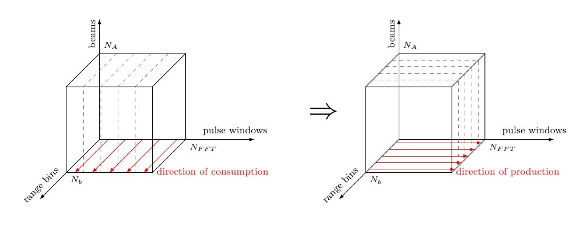Figure 24: Building matrices of complex samples during CT
Our CT network thus maps on each beam signal a corner turn process which, under the SDF execution semantics, consumes ordered samples, interprets them as a matrix, transposes this matrix, and produces samples ordered in the direction suggested in Figure 24.
Recall that, in order to achieve 50% overlapping between the two output channels, in the initial high-level model in section 2.2.2.3 we “delayed” the left channel with half a cube of “useless data” which we later ignored in the testbench. While it is possible to do the same trick here, i.e. delay the left channel with samples per beam, which is the equivalent of half a cube, we agreed upon it being a simulation artifice to avoid undefined behavior, but not really reflecting the target implementation. The end artifact would start streaming the left channels only after the first half cube. We can think of three ways how to model such a behavior without stepping outside the data flow paradigm5:
“starting” the entire system (i.e. considering time 0) once we know the values for half a cube. This means that the behavior of the AESA system does not include the acquisition of the first half video cube, which would be described in its history (i.e. initial state, e.g. passed as top-level argument).
using absent semantics, which would be the correct way to define such an abstract behavior, but would render the description of the whole system more complicated, since every block would then need to be aware of the “absence” aspect of computation.
using a dynamic dataflow MoC, which is a bit more risky, because in general most of these MoCs are undecidable and might lead to deadlocks if not used properly, but are less abstract and much closer to what you would expect from a dynamic “start/stop” mechanism.
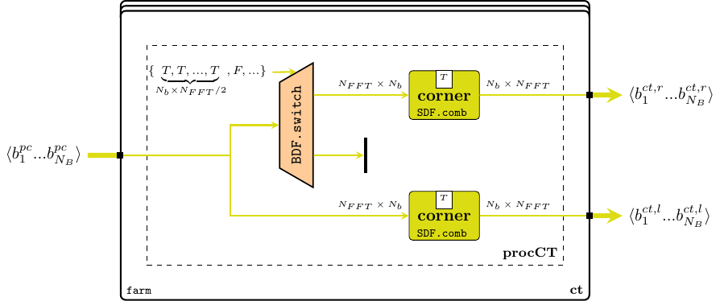Figure 25: CT network
Since we are already considering a refined behavior model of the AESA system, we have chosen the third approach, as hinted in Figure 25. We use the Boolean dataflow (BDF) MoC introduced by Buck and Lee (1993) to express the dynamic switching behavior. BDF extends SDF with two actors switch and select which are able to redirect the flow of data to/from separate channels based on an input selection signal carrying Boolean tokens. We use the BDF switch process which uses the hard-codedselectSig signal to redirect the first tokens for each beam (the equivalent of half a cube of indata) to a “null” channel, and only after that to start streaming into the right channel.
OBS: in general it is advised to avoid BDF, which does not benefit from static analysis methods for schedulability and deadlock detection, in favor of a more analyzable one, such as scenario aware dataflow (SADF) (Stuijk et al. 2011). However, in our case we base our modeling choice based on the knowledge that, lacking any type of feedback composition, the AESA signal processing system cannot cause any deadlock in any of its possible states. Even so, hard-coding the selection signal can also be considered a safe practice, because it is possible to derive a fixed set of SDF scenarios based on a known reconfiguration stream.
5.1.2.4 Doppler Filter Bank (DFB) and Constant False Alarm Ratio (CFAR)
For these two processing stages presented in sections 2.2.2.4, 2.2.2.5, we do not change the functional description at all, but rather the granularity of their timed description. We continue to work over the premise that signals are streaming samples of data, which have recently been arranged to arrive in pulse order, as suggested by Figure 26. As such, both stages are modeled as farms of SDF processes operating over beam streams, and for each stream they consume the necessary data, apply their (vector) function, and produce their respective data.
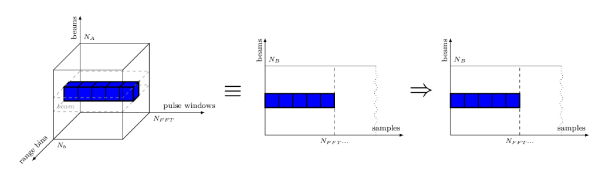Figure 26: Doppler Filter Bank on streams of complex samplesFigure 27: DFB + CFAR networks
Notice how we reuse the exact same functions and imported from the AESA.CubesAtom previously defined in section 2.2. This way we are sure that we have not introduced coding errors. Also, notice that after the CFAR process we do not unwrap the matrices any longer, but produce them as individual tokens. This is because the subsequent INT block, as seen in the next paragraph, operates much more efficiently on matrices, and thus we spare some intermediate wrapping/unwrapping.
OBS: each function composing and is itself inherently parallel, as it is described in terms of parallel skeletons. We could have “lifted” these skeletons as far as associating a process for each elementary arithmetic operation, following the example set by the DBF network in section 5.1.2.1. The two representations (if carefully modeled) are semantically equivalent and, thanks to the chosen formal description, can be transformed (ideally being aided by a computer/tool in the future) from one to another. In fact there are multiple degrees of freedom to partition the application on the time/space domains, thus a particular representation should be chosen in order to be more appropriate to the target platform model. However in this report we are not planning to refine these blocks even further, so for the purpose of simulation and visualization, this abstraction level is good enough for now. The skeleton lifting to the process network level is left as an exercise for the reader. The interested reader is also recommended to read the skeletons chapter in the technical manual (Ungureanu 2018) to see how the fft skeleton used in is defined, and how it behaves during different instantiations, as network of processes or as function.
5.1.2.5 Integrator (INT)
During the last stage of the video processing chain each data sample of the video cube is integrated against its 8 previous values using an 8-tap FIR filter.
Figure 28: Integration on cubes of complex samples
The integration, re-drawn in Figure 28, like each stage until now, can be modeled in different ways based on how the designer envisions the partitioning of the data “in time” or “in space”. This partitioning could be as coarse-grained as streams of cubes of samples, or as fine-grained as networks of streams of individual samples. For convenience and for simulation efficiency6 we choose a middle approach: video cubes are represented as farms (i.e. vectors) of streams of matrices, as conveniently bundled by the previous DFB stages. We pass the responsibility of re-partitioning and interpreting the data accordingly to the downstream process, e.g. a control/monitoring system, or a testbench sink.
Please review section 2.2.2.6 concerning the up-sampler interleave used as a SY utility process. Here, since you have been already introduced to the SDF MoC, we can “unmask” how an interleaving process actually operates underneath. It is in fact a SDF actor which consumes one token from each input and interleaves them at the output.
As for the FIR network, we prefer working in the SY MoC domain, which describes more naturally a streaming -tap filter, hence we use translate back using the toSY MoC interface.
At least for the sake of code elegance if not for more, we refine the system aesa' in Figure 30 to avoid unnecessary merging-splitting of vectors between stages, by fusing the farm skeletons between the PC and INT stages, like in Figure 31. While for simulation this transformation does not make much of a difference (thanks to Haskell’s lazy evaluation mechanisms), for future synthesis stages it might be a valuable insight, e.g. it increases the potential of parallel distribution. As both models are semantically equivalent an automated or tool-assisted transformation process should be trivial.
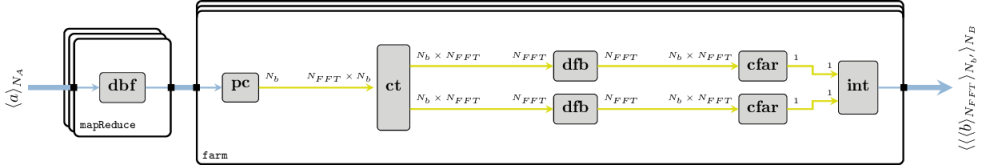Figure 31: AESA network when fusing the related farms
5.2 Model Simulation Against Test Data
Just like before in section 2.3 we test the compiled model built from the blocks defined in section 5.1 within the AESA.StreamsAtom module against the same generated input data. Please refer to the the project’s README file on how to compile and run the necessary software tools.
The 13 objects described in tbl. 2 and plotted in Figure 17 (a) are again identified in the AESA radar processing output plotted in Figure 32. Again we notice a slight difference in the cross-correlation values due to a different chaining of floating point operations, but in general the detected objects are within the same range.
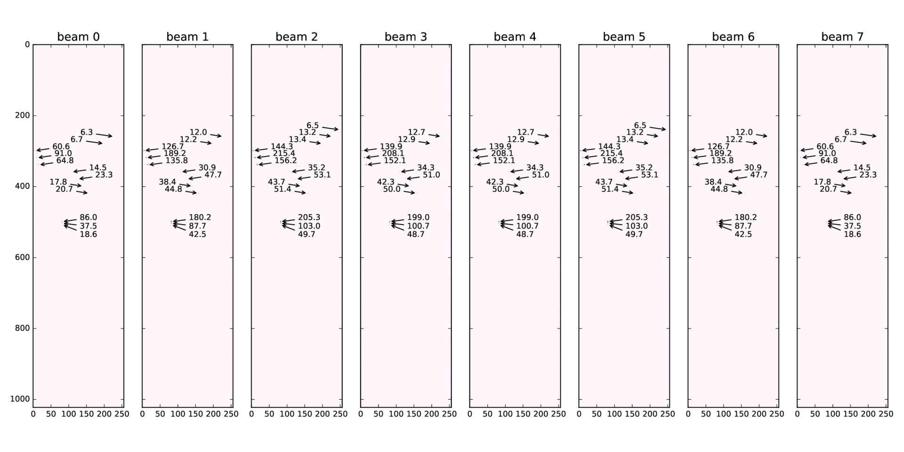Figure 32: One output cube with radar data
5.3 Checking System Properties
In section 4 we preached the need for ways of verifying that an (executable) model satisfies a set of specification properties, and that those properties are not being violated during the refinement process. We presented QuickCheck as a practical and easy means for formulating properties and validating them against randomly-generated test cases. Following the same mindset, in this subsection we will try to validate through simulation7 that the semantics of the main blocks in the AESA signal processing system defined in section 5.1 preserve the semantics of their initial high-level description from section 2.2, with respect to the properties formulated in section 4.2.
Below you find the code written in a runnable module found at aesa-atom/test, which constitute the :tests-cube suite:
We import the necessary libraries, such as QuickCheck the two AESA model implementations AESA.CubesAtom and AESA.StreamsAtom, some ForSyDe-Atom libraries and a couple of other utility libraries. We use the data generators defined in the Generators module defined in section 4.2.4.
Perhaps the most noticeable transformation has been performed on the DBF module, since all the primitive operations performed by the vector-matrix dot product have become synchronous processes instead. In order to show that the two models are in fact sematically equivalent with respect to the values and their structured order, but not necessarily to the causal order or time implications, we formulate a property which degrades the signals and vectors to lists and compares them. Lists do not capture any temporal or spatial semantics, but they do have a clearly-defined ordering relation, which is equally valuable in our case. The formulations below follow the notation from section 4.1, and we denote the vector dimensions Rn for range, Wn for window, An for antenna, Bm for beam and Ps for pulse.
Let us now test the transformed PC block for the same property. Although the innermost operation is still fir, we would like to make sure that changing the MoC domain of the process from SY (on vectors) to SDF (on tokens) did affect in any way the ordering (and values) of the data.
N.B.: after a few iterations we realized that the property prop_pc_transf_equiv would not hold because of the consumption rules of SDF.comb11. The streaming version of PC would not produce the same result as the cube version had the Rn dimension not been an integer multiple of the consumption rate , simply because if there are not enough tokens at the input, a SDF actor does not execute, whereas a scalable vector operation is evaluated regardless of how many elements it operates on. We thus had to adjust the property in eq. 18 accordingly having this insight, which means that we restrict the legal inputs pool to fit more to the specifications in section 2.2.AESA parameters, otherwise we cannot guarantee the property above.
When evaluating the corner turning (CT) it is now easier to verify the 50% overlap because we have access to the streams directly. We thus formulate the property
For the rest of the blocks, DFB, CFAR and INT we can follow the model set by prop_pc_transf_equiv to formulate properties testing for functional equivalence. We only mention these properties as formulas, and we leave the writing of the QuickCheck code as an exercise to the reader.
5.3.3 Main function. Test Suite Results
We gather the QuickCheck properties defined above into one runnable suite:
which we execute, as per the instructions in the project’s README file. Since we are generating random tests on cubes of noticeable dimensions, the execution time is also quite long, hence the smaller number of test cases generated per suite. The expected printout is:
aesa-atom-0.1.0.0: test (suite: tests-stream)
Stream HL Model Tests :
DBF transformation preserves the order of elements : [OK, passed 50 tests]
PC transformation preserves the order of elements : [OK, passed 20 tests]
CT 50% overlap : [OK, passed 20 tests]
Properties Total
Passed 3 3
Failed 0 0
Total 3 3
aesa-atom-0.1.0.0: Test suite tests-stream passed
This means that, at least when concerning the functionality of the AESA signal video processing chain, we have not introduced any unwanted flaws with our model refinement process. We also have a better understanding of the conditions and restrictions within which the new refined model operates as expected.
5.4 Conclusion
In this section we have presented an alternative model of the AESA signal processing chain which refines its behavior in order to expose its streaming characteristics inferred from the specification statement “For each antenna the data arrives pulse by pulse, and each pulse arrives range bin by range bin. This happens for all antennas in parallel, and all complex samples are synchronized with the same sampling rate, e.g. of the A/D converter.” While still regarded from a high abstraction level (e.g. SDF actors are assumed to execute “instantaneously” once they have enough data to operate on), the refined processing blocks now describe a more fine-grained causal ordering between individual samples arriving in streams. This enables their potential of better resources exploitation (e.g. hardware/software pipelining, or distribution) during future mapping, scheduling and synthesis design stages. We have (unit) tested this refined model against the high-level “golden model” presented in section 2, by confronting the two models’ responses against the same set of input stimuli. We have also formulated a couple of properties to ensure that the functional description of some of the blocks is still the expected one, and we have not introduced hidden bugs, or rather flaws in the model description.
In the following section we plan to synthesize one functional block down to VHDL code targeting FPGA hardware implementation. This means that we will continue gradually refining the (sub-)system model until we reach enough detail level to start the code synthesis process. As each refinement process is prone to introducing hidden mistakes or logical flaws due to its nonsemantic-preserving nature, we will monitor the correctness of the resulting artifact with the help of the existing, as well as newly-formulated, properties.
6 Model Synthesis to VHDL
In this section we choose one sub-system in the AESA signal processing stage and gradually refine to synthesizable VHDL code, by applying a series of semantic- and nonsemantic-preserving transformations. In order to validate the resulting design we gradually wrap each refined component in order to co-simulate it with the original model, test it against the same input data as the previous sections, and formulate design properties that ensure the desired behavior is preserved. As input model we use the refined streaming behavior from section 5 and we focus only on its PC stage. Throughout this section we will introduce another framework in the ForSyDe ecosystem: ForSyDe-Deep, which is able to parse an input ForSyDe program and translate it to different backends.
The system in section 5, although exposing a more fine-grained streaming behavior for each data channel, is still far from a physical realization. In order to reach a suitable implementation one has to take into consideration a multitude of aspects from one or several target platforms (architectures), which form the design space. Mapping a behavior onto a platform often involves a (series of) transformation(s) that do not fully preserve the original semantics any longer, yet still offer a good realization of the intended behavior. We call these nonsemantic-preserving transformations (Raudvere, Sander, and Jantsch 2008).
In this section we will focus on synthesizing the PC signal processing stage, as specified in section 1.Application Specification and modeled in section 5.1, into an FPGA component. We do that by applying four subsequent refinement phases, guided by design decisions to reach a correct and/or efficient implementation. Each decision is tested against a set of properties as introduced in section 4, and each refined component is co-simulated within the entire AESA high-level model.
6.1 Refinement 1: Untimed MAV to Timed FIR
The first refinement comes from the observation that the PC block from section 5.1, although operating on streams, exposes an instantaneous, untimed behavior over fixed sized-vectors of numbers. In other words, the SDF process associated with a channel’s PC stage is more concerned that a moving average (MAV) algorithm is applied on a vector of samples as soon as they arrive, but it is not really concerned on how the MAV is performed. This type of under-specification can derive a family of possible implementations, but does not bide well with the register transfer level (RTL) style of modeling specific to hardware implementations, which requires a more specific total order between actions. For example, translating the “instantaneous” MAV function (i.e. fir (mkPcCoef pcTap)) word-by-word into RTL would create a terribly un-efficient and wasteful circuit! Luckily, we have already seen a similar, more fine-grained streaming behavior for the same MAV function in section 2.2.2.6, and respectively section 5.1.2.5, namely the -tap systolic FIR structure created with the fir' skeleton8.
6.1.1 Model
In this first refinement phase we translate the SDF process procPC from section 5.1.2.2 into systolic network of SY processes procPC' much more appropriate and efficient for RTL-based implementations.
To make sure we use exactly the same coefficients and constants as the ones used with the high-level model in section 5.1, we import them directly from the aesa-atom package.
First we define the coefficients which will be used throughout all the refinement phases. If you read the API documentation of fir' you will see that the order of application of FIR tap processes is from right to left, thus we need to reverse the order of PC coefficients.
Then we define the interface for the PC’ stage, which is the same as for PC in section 5.1.2.2. This means that, as far as the type checker is concerned, we can simply replace pc with pc' in the original high level model and simulate as part of the entire AESA signal processing chain.
the procPC' process is, as mentioned earlier, a SY fir' process network which defines a particular timed (in the causality sense) behavior for the SDF procPC in section 5.1.2.2.
OBS: for didactic purpose, we define procPC' as an instance of a custom process constructor pcFIR defined below. The role of pcFIR is to decouple whatever happens in the function layer9 from the layers above. This will come in handy in the next refinement phase, which affects only the function layer, and thus we can reuse the same code patterns from this module.
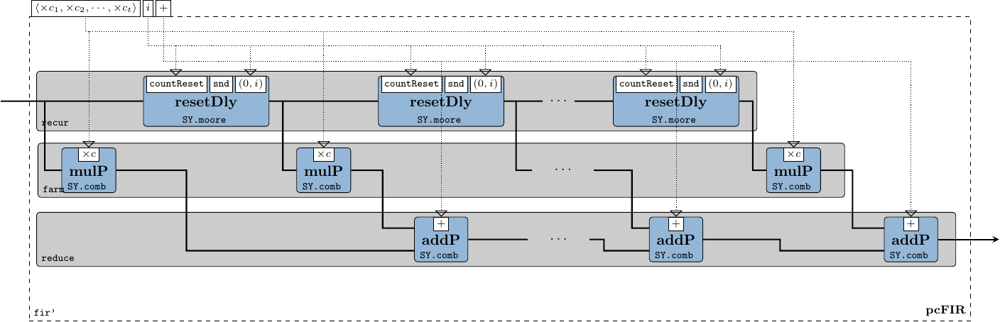Figure 33: The internals of the pcFIR process constructor
When we change the time domain of the process we lose the information on the partial order between events. In SY there is no MoC-induced mechanism that tells us when events have been consumed/processed: this mechanism needs to be hand-crafted. One solution is to embed a count-reset Moore state machine inside each delay element associated with every FIR tap. This way, each Moore machine stores a counter value along with the previous complex sample, and would reset its state after after propagating samples.
Finally, we define procPC' by filling in the function layer entities needed by the pcFIR process constructor.
As mentioned above, the PC’ component can be “plugged in” and used with the AESA signal processing chain. Please refer to the project’s README file, respectively the binary help menu instructions, on how to execute the model containing the PC’ block against the same test input data as the previous high-level models. For the sake of space we do not include the output image, however we encourage the reader to try it out and plot it herself. For now we can only assure you that it looks similar to Figure 32, except for the detection values, whose (slight) differences are induced by floating point calculation errors.
6.1.3 Properties
The main property we want to test now is that the process procPC' defined above is sequence equivalent with the original procPC from section 5.1.2.2 and hence, as of prop_pc_transf_equiv defined in eq. 17, the PC’ stage is an exact functional replacement for the high-level PC operating on video cubes.
We define a new module as part of these refinements’ test suite:
In order to test sequence equivalence between the two processes we need to take into account two very important matters:
a SDF process’ output signal contains a number of elements which is a multiple of its production rate, whereas a SY process does not have this restriction. Sequence equivalence means that both output signals have the same initial segments, property which is handled by the zip list function.
floating point numbers cannot be used to test for equality, especially now since the order of operations is different. Luckily we have defined both procPC and procPC', as well as their coefficient vectors as polymorphic, thus as a practical alternative Complex Float (i.e. ), we can use Rational numbers (i.e. ) which have a strict notion of equality. Sequence equivalence over is sufficient to later demonstrate through inference eq. 23.
When running the test suite (refer to the README instructions) prop_refine1_equiv passes all tests, which means that the two behaviors are compatible and PC’ can be used as source for further refinements.
6.2 Refinement 2: Floating Point to Q19
Due to it widespread usage with general purpose computing, IEEE floating point number representation is the de-facto standard for non-integer numerical applications. However, although common and even taken for granted in CPUs, floating point units are in general much larger and more expensive circuits than their integer counterparts. Moreover, judging by the application specification in section 1.Application Specification, synthesizing floating point arithmetics on FPGA would be overkill, because:
we do not need a large span of numbers. On the contrary, the specification says that at the PC stage the samples are within , i.e. only decimals;
according to tbl. 1, for the calculations within PC we do not need a precision higher than 20 bits.
Driven by these statements, we decide that a much more appropriate number representation for synthesizing the PC signal processing stage to FPGA is the fixed point Q19 representation which, under the hood, consists simply in integer calculations. We thus refine further the PC’ stage as to operate on complex fixed point Q19 numbers instead of complex floating point numbers, or more specific refine only its function layer to operate on this type of numbers.
We import the Complex type. However, unlike previously, we now use our in-house ForSyDe.Deep.Complex module. This module is in fact re-exporting Data.Complex along with some additional instances which makes it synthesizable, plus a couple of custom arithmetic operators (+:), (-:), (*:) which do not force the base type of Complex a to be a part of RealFloat class (see Data.Complex API), but rather any Num type.
We import our in-house fixed point data types. This module exports the usual types such as Fixed8, Fixed16, Fixed32 and Fixed64. For this report we have extended the forsyde-deep package with a custom (synthesizable) Fixed20 type, hard-coded across the full compiler stack. Future versions of ForyDe-Deep will most likely support arbitrary-precision fixed point types using type-level numerals instead, similar to FSVec, but for simple demonstration purposes Fixed20 suffices at the moment.
For procPC'' we use the previously defined pcFIR process constructor whose function layer entities are now replaced with operations over Complex Fixed20 numbers. This eases the validation process: we now need to test only that the function layer refinements respect the specifications, and not the whole system.
In order to be able to “plug in” PC’’ into the AESA signal processing system, we need to wrap it so that its type signature is the one expected. We thus define the following wrapper which translates the floating point numbers fed into PC to fixed point Q19 and back:
The effect of the refined PC’’ signal processing stage can be observed by simulating the AESA application instantiating wrappedPC''. Please refer to the project’s README file on how to execute the program. When plotting the results against the same input data, we can see that the same 13 objects are detected, albeit having different numerical values.
6.2.3 Properties
In the second refinement phase the properties target mainly the translations between the floating point and fixed point representations. We define a new module with the usual preamble:
The first property we check is that even when wrapped (i.e. going through two translations), the procPC'' does not overflow its legal input/output value range, i.e. . For this we write a local process wrapper wrapProc.
The second property we want to test is that the cumulative quantization error stays within a constant, accepted range. Again, we cannot use floating point numbers as samples for comparison, due to the dynamic quantization error of their own representation. As before, we fall back to rationals which constitute a good model. The cumulative error for one PC’’ channel, supposing that both multiplications and addition results are truncated back to Q19, can be calculated with:
Notice that we have instantiated a clone procPC'' which works on rational numbers called procPCRationals using the pcFIR process constructor. We needed this process to compare the rational outputs against the fixed point ones.
6.3 Refinement 3: Deep Language Embedding
In this refinement phase we translate the PC’’ system defined in the previous phase to a language more appropriate for synthesis. Up until now we have used the shallow-embedded DSLs of ForSyDe, namely ForSyDe-Atom and ForSyDe-Shallow. In this section we will start using ForSyDe-Deep, a deep-embedded DSL, capable of extracting a system’s internal structure as a netlist and synthesizing it to different backends (at present GraphML and VHDL).
6.3.1 Crash course in ForSyDe-Deep
ForSyDe-Deep was originally created as a replacement for ForSyDe-Shallow. It provides a sub-set of the ForSyDe-Shallow language and, in principle, is based on the same modeling concepts. However its deep-embedded features (such as netlist traversing and language parsing) makes it much more verbose than its shallow counterparts. This is why its syntax appeals less to new users, hence it became it a fall-back framework for synthesis purposes only. Nevertheless translating from a shallow ForSyDe model to a deep one is straightforward, once you understand the principles listed as follows. For more on ForSyDe-Deep modeling, refer to the beginner tutorials on the ForSyDe homepage.
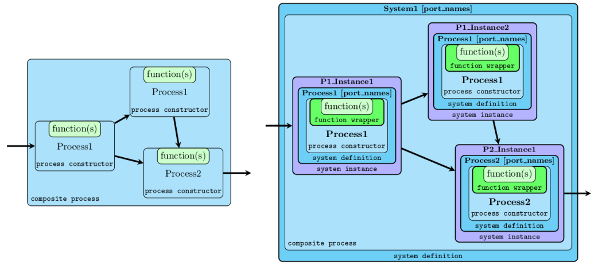Figure 34: The difference between a shallow ForSyDe system (left) and a deep one (right)
process functions are parsed to their AST using a language extension of Haskell called TemplateHaskell. The function parser is able to recognize a subset of the Haskell language written between the so-called banana brackets [d| function |], and needs to explicitly specify its type signature. Whatever code is written within the banana brackets is parsed as-is and needs to be self-contained, i.e. information cannot be inferred from global/system-wide definitions. In order to instantiate a parsable ForSyDe-Deep function from a Haskell function, it needs to be wrapped into a ProcFun type, using one of the function wrappers provided by the API.
processes are instantiated using the ForSyDe-Deep equivalents of the main ForSyDe-Shallow SY process constructors. The main difference is that they need a string identifier as well as ProcFun-wrapped functions instead of regular Haskell functions.
in order to be able to simulate, parse or synthesize a process, it needs to be wrapped within a SysDef type, similarly to parsable functions, using one of the API-provided system definition wrappers. These system wrappers, apart from a fully applied process, need also a unique string identifier for the new system, as well as name identifiers for all its input and output ports.
in order to use a defined system hierarchically as a component, it needs to be instantiated back to a composable function. A process instance needs a unique name identifier, as well as a SysDef object.
N.B.: That is quite a mouthful of wrappers and, as you will see in the PC example below, it implies a quite some unpleasant verbosity, especially for one used to the elegant compactness of Haskell programs. Future iterations of the ForSyDe language will most likely have a unified syntax and translation from shallow (for efficient simulation) to deep (for structure parsing and synthesis) versions will be done automatically. For now the current (type-extended) version of ForSyDe-Deep suffices for demonstration purposes since the modeling principles are the same no matter the frontend language.
6.3.2 Model
We create a new module for this refinement phase. The TemplateHaskell and FlexibleContexts language extensions are mandatory.
We import the ForSyDe-Deep libraries. The ForSyDe.Deep.Skeletons library belongs to the package extension built for this case study and contains a couple of deep-embedded (synthesizable) skeletons, as presented in sections 2, 5.
We need some additional type libraries. Data.Param.FSVec defines fixed-size vectors as compared to the shallow vectors used until now, e.g. ForSyDe.Atom.Skeleton.Vector. Fixed-size vectors have their length captured in the type signature as type-level numerals imported from Data.TypeLevel.Num. For example (FSVec D8 a) denotes a fixed-size vector of type a, with the size of 8 elements. We also use list functions, thus we can tell their functions apart by loading the two libraries using different aliases.
For starters, let us define the adder process used in the fir' skeleton. According to the crash course in section 6.3.1 we need to gradually wrap its elements until it becomes a system definition SysDef. First, we need to declare a ProcFun element from a Haskell addition function. As already mentioned, whatever is written between the banana brackets needs to be self-contained. This means that the Num type instance of Complex which overloads the (+) operator is not of much use here. Complex number addition needs to be explicitly written so that the parser know what to synthesize (N.B. type class support is listed among the “todo” items of future ForSyDe language versions).
The addition process is created by passing an identifier and the newly defined ProcFun to the process constructor zipWithSY (i.e. the equivalent of SY.comb21 in ForSyDe-Atom).
Similarly, we define the "mul" component, but this time in one go. Notice again the expanded complex number multiplication. Instead of the normal multiplication operator (*) we use the in-house fixmul20 function, which multiplies two Q19 numbers and truncates the result back to Q19. In the shallow simulation fixmul20(*), but in the deep version fixmul20 synthesizes to a custom VHDL std_vector function instead of the regular VHDL * operator.
The reset-delay FSM used as a delay element in the fir' pattern needs also to be defined as a component. We define the "rDelay" component using the mooreSY process constructors, taking two ProcFuns for the next state function countReset and output decoder propagate. We fix the counter value type to be Int16. The globally-defined nb (i.e. the number of range bins ) cannot be recognized as-is inside the banana brackets, and for now all we can do is to write the number explicitly. (N.B. support for partial function application is listed among the “todo” items of future ForSyDe language versions).
Because partial application is not yet supported we need to instantiate the vector of coefficients into a farm of constSY signal generators. We thus create the “system constructor”:
which we then use as argument for the app11 skeleton (which is in fact a farm11 tailored for partial application only) to instantiate a farm of constant signal generators, i.e. a vector of constant signals. The coefficients are interpreted into a FSVec from their shallow counterparts defined in the second refinement phase.
OBS: ForSyDe-Deep skeletons, as compared to their shallow counterparts, take care of creating instances (see Figure 34) of defined systems as well as coupling them together. This is why they need components as arguments instead of simple functions.
Now, for didactic purpose, let us define ForSyDe-Deep equivalent of the fir' skeleton using the base catamorphisms recur (or its specialization generate), farm and reduce. We call this process network constructor deepFIR and, as you can see, it is defined similarly to its shallow counterpart, with a few exceptions: 1) it expects a base identifier, to create unique IDs for all the generated component instances; 2) it takes SysDef components instead of processes as arguments; 3) for coefficients it requires a fixed-size vector of strictly positive size, containing constants.
We finally can define a component for the deep equivalent of procPC using the deepFIR process network constructor, by passing the above-defined components as arguments.
with its associate system definition. Unfortunately, at the moment processes of type FSVec a (Signal a) -> ... are not part of the SysFun class, thus we cannot create directly a SysDef components from pc3. What wee can do however is to wrap pc3 inside a zipx . pc . unzipx pattern which merely transposes the vector and signal domains, and the synthesizer will simply ignore it. (N.B. vector-based components will be supported in future iterations of ForSyDe).
Similarly to the previous refinement stages, we further wrap the PC component in order to co-simulate it with the rest of the AESA system. To simulate a ForSyDe-Deep SysDef component we use the simulate function
Please refer to the project’s README file for how to execute the AESA system alongside the deep pc3 component. The plotted output for running the system against the radar indata generated by the 13 objects is shown in Figure 35.
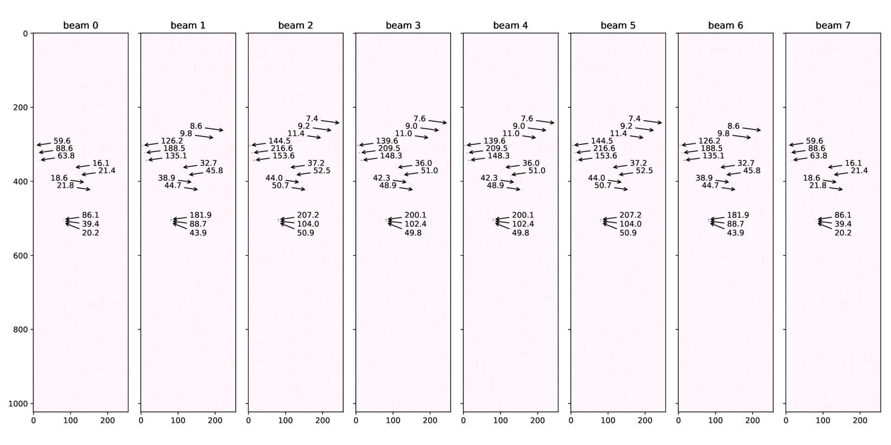Figure 35: One output cube with radar data
The PC component is not only able to be simulated, but we can also parse its internal structure. Here we call the command which dumps the internal structure of sysPC3 as hierarchical GraphML files, as seen in the plots in Figure 36.
Figure 36: Dumped GraphML structure: PC (left); FIR (above right); rDelay (below right).
Of course, the whole point of writing ForSyDe-Deep is to synthesize to backend code, in this case to synthesizable VHDL code. The following command generates a VHDL project folder with the PC architecture files.
Furthermore, one can simulate the VHDL files using ModelSim (or alternatively Ghdl), provided their binaries are found in the system PATH. The following function can be wrapped as wrappedPC3 instead of simulate sysPC3.
Since fixed point numbers can be compared exactly, we simply use the processes as they are, operating on signals of Fixed20 numbers to test the property
Since the test passes flawlessly we can conclude that in the third refinement phase we have achieved semantic equivalence between the components written in the two different languages.
6.4 R4: Balancing the FIR Reduction
The final refinement phase consists in performing some simple semantic-preserving transformations on the previous model in order to optimize the efficiency of the generated circuit.
Two (rather evident) optimizations are considered in this phase:
as seen in Figures 36, 37, as well as in Figure 33, the final stage of the pcFIR-instantiated process network consists of a reduction pattern. This pattern is instantiated recursively, by taking the result of the previous addition and applying it to the next one, thus generating a linear () reduction tree. However, the base operation performed, i.e. addition, is commutative, and a well-known catamorphism theorem (see Ungureanu et al. (2019) for more details) states that the reduction can in fact be performed as a balanced logarithmic () tree which means, in the case of digital hardware designs, a shorter combinational critical path.
having a counter in each delay element, although elegant and modular, is a terrible waste of silicon when considering that all counters are counting the same thing: how many samples have passed. A more reasonable design would take advantage of the identical part in all the "rDelay" components (i.e. the counter), and separate from the non-identical part (i.e. the delay register).
The second optimization is identified and performed automatically by the Quartus compiler, hence the specifications in tbl. 3 includes only one counter circuit for all the delay elements. Therefore we will only focus on reduction tree balancing and leave the functional decoupling of the reset-counter as an exercise.
6.4.1 Model
The module for the forth refinement module is the following.
To instantiate the logarithmic reduction tree, it is enough to replace the reduce skeleton with the logReduce skeleton in the previous deepFIR process network constructor.
Similar to previous refinement phases, we wrap the PC in order to co-simulate it with the high-level AESA model. As expected, the AESA simulation using this component gives exactly the same results as the previous simulation, shown in Figure 35.
Dumping the internal structure of PC shows in Figure 38 a more compact FIR structure, with a shorter combinational depth, as well as one "rCount" component fanning out into all the delay elements.
The generated circuit has exactly the same size as the previous one (tbl. 4), however, the combinational depth is visibly smaller, as seen in the RTL plot in Figure 39.
Figure 38: Dumped GraphML structure of the new FIR componentFigure 39: Screenshot of the RTL view of FIR
Table 4: Specifications of generated FPGA design
Top-level Entity Name
PC4
Family
Cyclone IV GX
Total logic elements
3,014
Total combinational functions
3,014
Dedicated logic registers
976
Total registers
976
Total memory bits
0
Embedded Multiplier 9-bit elements
160
Total PLLs
0
6.4.3 Properties
Here we test that the ForSyDe-Deep version of PC is the same as PC defined in the third phase.
As all tests are passing (check the project’s README file on how to run tests), hence we can conclude that PC is a good replacement for the AESA PC stage.
6.5 Conclusions
In this section we have shown a series of design transformations on one of the high-level model components of AESA down to synthesizable VHDL code. Along the way we have co-simulated the transformed components alongside the original AESA high-level model, as well as gradually validated the final generated design artifact is a proper implementation for its behavioural model.
The scope of this section was two-fold: on the one hand we have shown a practical and didactic example and consolidated the design methodology introduced in the previous chapters; and on the other hand we have provided a brief glance over the current status of some of the tools and their position in the ForSyDe ecosystem, as well as directions for future development. As mentioned several times throughout this document the ForSyDe ecosystem is actively being developed and the overall vision is to learn from past and current experiences in order to achieve a correct-by-construction design flow.
Although all the designs shown in this report, both original and intermediate, were written manually, the modeling frameworks have provided us with the means to understand which transformations can be fully- or partially-automated in the future. For example refinement 3 should be invalidated by a unified high-level, layered modeling language; refinement 4 could be done automatically once a program analyzer understands that the core reduction operation is commutative; refinement 2 could be fully- or partially-automated once a clear design specification or constraint language can be formulated and analyzed. Refinement 1 though, as well as the transformation from the cube version of AESA in section 2 to the streamed version in section 5 is not so trivial to automate. This is because the nonsemantic-preserving transformations involved admit multiple (maybe better) solutions. Choosing between alternative solutions, although aided by verification and validation techniques, often relies on designer experience. In the future some of these decision could be automated or computer-aided by design space exploration techniques once we understand how to formulate the search problems.
7 Acknowledgements
The authors would like to acknowledge Per Ericsson for his contributions in designing the AESA signal processing chain (in Figure 2) and in writing the specifications.
This report was partially funded by the Swedish Governmental Agency for Innovation Systems, NFFP7 project: Correct-by-construction design methodology #2017-04892.
References
Backus, John. 1978. “Can Programming Be Liberated from the von Neumann Style?: A Functional Style and Its Algebra of Programs.” Communications of the ACM 21 (8): 613–41. https://doi.org/10.1145/359576.359579.
Benveniste, Albert, Paul Caspi, Stephen A. Edwards, Nicolas Halbwachs, Paul Le Guernic, and Robert de Simone. 2003. “The Synchronous Languages 12 Years Later.” Proceedings of the IEEE 91 (1): 64–83.
Buck, J.T., and E.A. Lee. 1993. “Scheduling Dynamic Dataflow Graphs with Bounded Memory Using the Token Flow Model.” In IEEE International Conference on Acoustics Speech and Signal Processing, nil. https://doi.org/10.1109/icassp.1993.319147.
Claessen, Koen, and John Hughes. 2011. “Quickcheck: A Lightweight Tool for Random Testing of Haskell Programs.” ACM SIGPLAN 46 (4): 53.
Fischer, Jörg, Sergei Gorlatch, and Holger Bischof. 2003. “Foundations of Data-Parallel Skeletons.” In Patterns and Skeletons for Parallel and Distributed Computing, edited by Fethi A. Rabhi and Sergei Gorlatch, 1–27. Springer London. https://doi.org/10.1007/978-1-4471-0097-3_1.
Hutton, Graham. 2016. Programming in Haskell. 2nd ed. New York, NY, USA: Cambridge University Press.
Lee, Edward. 2015. “The Past, Present and Future of Cyber-Physical Systems: A Focus on Models.” Sensors 15 (3): 4837–69. https://doi.org/10.3390/s150304837.
Lee, Edward A. 2018. “Models of Timed Systems.” In Formal Modeling and Analysis of Timed Systems, edited by David N. Jansen and Pavithra Prabhakar, 17–33. Cham: Springer International Publishing.
Lee, Edward A, and Thomas M Parks. 1995. “Dataflow Process Networks.” Proceedings of the IEEE 83 (5): 773–801.
Lee, Edward A, and Alberto Sangiovanni-Vincentelli. 1998. “A Framework for Comparing Models of Computation.” IEEE Transactions on Computer-Aided Design of Integrated Circuits and Systems 17 (12): 1217–29.
Lee, Edward A., and Sanjit A. Seshia. 2016. Introduction to Embedded Systems: A Cyber-Physical Systems Approach. Second Edition. MIT Press. http://leeseshia.org.
Lipovača, Miran. 2011. Learn You a Haskell for Great Good!: A Beginner’s Guide. 1st ed. San Francisco, CA, USA: No Starch Press.
Raudvere, Tarvo, Ingo Sander, and Axel Jantsch. 2008. “Application and Verification of Local Nonsemantic-Preserving Transformations in System Design.” IEEE Transactions on Computer-Aided Design of Integrated Circuits and Systems 27 (6): 1091–1103.
Sander, I., and A. Jantsch. 2004. “System Modeling and Transformational Design Refinement in Forsyde.” IEEE Transactions on Computer-Aided Design of Integrated Circuits and Systems 23 (1): 17–32. https://doi.org/10.1109/tcad.2003.819898.
Sander, Ingo, Axel Jantsch, and Seyed-Hosein Attarzadeh-Niaki. 2017. “ForSyDe: System Design Using a Functional Language and Models of Computation.” In Handbook of Hardware/Software Codesign, edited by Soonhoi Ha and Jürgen Teich, 99–140. Dordrecht: Springer Netherlands. https://doi.org/10.1007/978-94-017-7267-9_5.
Skillicorn, David B. 2005. Foundations of Parallel Programming. 6. Cambridge University Press.
Stuijk, Sander, Marc Geilen, Bart Theelen, and Twan Basten. 2011. “Scenario-Aware Dataflow: Modeling, Analysis and Implementation of Dynamic Applications.” In 2011 International Conference on Embedded Computer Systems: Architectures, Modeling and Simulation.
Ungureanu, George, and Ingo Sander. 2017. “A Layered Formal Framework for Modeling of Cyber-Physical Systems.” In 2017 Design, Automation & Test in Europe Conference & Exhibition (Date), 1715–20. IEEE.
Ungureanu, George, Timmy Sundström, Anders Åhlander, Ingo Sander, and Ingemar Söderquist. 2019. “Formal Design, Co-Simulation and Validation of a Radar Signal Processing System.” In Proceedings of FDL 2019: Forum on Specification & Design Languages.
For more information on absent semantics, check out Chapter 3 of (Lee and Seshia 2016)↩
at this moment it is enough to know that both are implemented in terms of existing skeletons or process constructors. More complex behaviors such as these two will be made explicit later in section 5. Interested readers can consult the implementations in the forsyde-shallow-extensions package.↩
the decimalCpxNum generator and withinRangeComplex utility are defined in the Generators module, see section 4.2.4↩
this type of behavior is quite naturally expressed in other paradigms, such as communicating sequential processes (CSP), rendezvous or Petri Nets. Currently ForSyDe does not support such MoCs and they are out of the scope of this report.↩
we try to avoid unnecessary transposes (i.e. type traversals) which, at the moment, are not very efficiently implemented.↩
actually for most of the properties in this section there are theories which can prove the preservation of semantics during certain transformations (e.g. the Bird-Merteens formalism) without the need to resort to simulation, but they are out of the scope of this report. This report rather focuses on common practices and tools for disciplined design instead.↩
in fact both fir and fir' derive from the same catamorphism. For a formal proof check (Ungureanu et al. 2019).↩